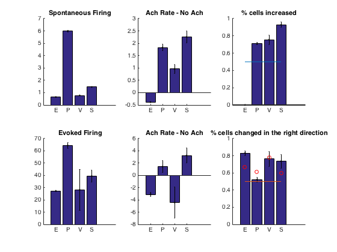

This is the readme for the models associated with the paper: Kuchibhotla KV, Gill JV, Lindsay GW, Papadoyannis ES, Field RE, Sten TA, Miller KD, Froemke R (2016) Parallel processing by cortical inhibition enables context-dependent behavior. Nat Neurosci This matlab code was contributed by Rob Froemke. The code was written by Grace Lindsay and Ken Miller. Usage: ------ To start download and extract this zip archive. Type either "model_4pop" or "model_multiunit" at the matlab command prompt after cd'ing to the extracted folder. model_4pop will generate the following graphs: model_multi_unit generates the figure: 